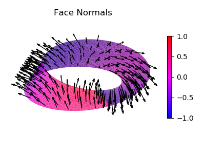
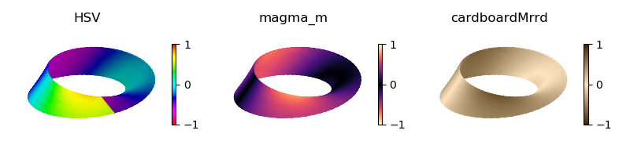

Cyclic and Mirrored Colormaps¶
Cyclic Colormaps¶

import numpy as np
from matplotlib import pyplot as plt
from matplotlib.ticker import LinearLocator
import s3dlib.surface as s3d
import s3dlib.cmap_utilities as cmu
#.. Cyclic Colormapped (angular)
# 1. Define functions to examine ....................................
def torusFunc(rtz) :
r,t,z = rtz
ratio = .45
Z = ratio*np.sin(z*np.pi)
R = r + ratio*np.cos(z*np.pi)
return R,t,Z
# 2. Setup and map surfaces .........................................
rez= 5
cmap = cmu.reversed_cmap(cmu.hue_cmap())
torus = s3d.CylindricalSurface(rez).map_geom_from_op( torusFunc )
torus.map_cmap_from_op( lambda xyz : xyz[1] , cmap ).shade(.5)
# 3. Construct figure, add surfaces, and plot ......................
fig = plt.figure(figsize=plt.figaspect(0.75))
fig.text(0.975,0.975,str(torus), ha='right', va='top', fontsize='smaller', multialignment='right')
ax = plt.axes(projection='3d')
ax.set(xlim=(-1,1), ylim=(-1,1), zlim=(-1,1) )
ax.xaxis.set_major_locator(LinearLocator(5))
ax.yaxis.set_major_locator(LinearLocator(5))
ax.zaxis.set_major_locator(LinearLocator(5))
minc = torus.bounds['vlim'][0]
maxc = torus.bounds['vlim'][1]
plt.colorbar(torus.cBar_ScalarMappable, ax=ax, ticks=np.linspace(minc,maxc,5), shrink=0.6 )
ax.add_collection3d(torus)
fig.tight_layout()
plt.show()
In cylindrical, polar, and spherical coordinates, the angular coordinate is cyclic. The geometry is continuous for θ equal from 2π to 0. For the coloration to be continuous at this position, the colormap must also be cyclic. Matplotlib provides three registered cyclic colormaps ‘twilight’, ‘twilight_shifted’, and ‘hsv’. For this torus surface, the modified version of the ‘hsv’ colormap was used for the color based on mapping using the angular position.
Mirrored Colormaps¶
The Color Map Utilities contain numerous mirroring color map creation functions. These functions can also be used to produce cyclic colormaps from any colormap.
Colormaps are also useful for illustrating the geometry by applying colormaps by Shading, Highlighting and Color Mapped Normals. Using this technique, most colormaps provide continuous shading for surfaces with continuous normals. However for non-orientable surfaces, the normals may not be continuous. This is the case for a Mobius strip as shown in the plot below.
Although cyclic colormaps have the same lower and upper values, for these cases the map must be symetric about the center. Mirrored colormaps provide this quality. For the three figures below, the first case uses an ‘hsv’ cyclic colormap showing the discontinuity in normals. The last two use mirrored colormaps which are continuous. The middle colormapped surface uses a standard Matplotlib colormap which has been mirrored.
The function for the Mobius strip is that used in the Cylindrical Coordinates example.
import numpy as np
from matplotlib import pyplot as plt
import s3dlib.surface as s3d
import s3dlib.cmap_utilities as cmu
#.. Mirrored Colormap Usage
# 1. Define functions to examine ....................................
def twistFunction(rtz,twists) :
r,t,z = rtz
# Note: sliced surface needed due to discontinuity @ t=0 if twists is odd
thickness = 0.33
w = thickness*z
phi = 0.5*t*twists
R = 1 + w * np.cos(phi)
Z = w * np.sin(phi)
return R,t,Z
# 2 & 3. Setup surfaces and plot ....................................
rez = 4
cmu.rgb_cmap_gradient([0.25,0.15,0],[1,.9,.75],'cardboardMrrd',mirrored=True)
hsvr = cmu.reversed_cmap(cmu.hue_cmap())
cmaps = [hsvr,cmu.mirrored_cmap('magma'),'cardboardMrrd']
title = ['HSV','magma_m','cardboardMrrd']
fig = plt.figure(figsize=(8,2.1))
for i in range(0,3) :
twist = s3d.CylindricalSurface(rez, basetype='squ_s')
twist.map_geom_from_op( lambda rtz : twistFunction(rtz,1) )
twist.map_cmap_from_normals(cmap=cmaps[i], direction=[1,1,1])
if i==0 : twist.shade(.5)
ax = fig.add_subplot(1,3,i+1, projection='3d')
ax.set(xlim=(-0.8,0.8), ylim=(-0.8,0.8), zlim=(-0.8,0.8) )
ax.set_title(title[i])
ax.set_axis_off()
ax.view_init(30,-20)
plt.colorbar(twist.cBar_ScalarMappable, ax=ax, shrink=0.6 )
ax.add_collection3d(twist)
fig.tight_layout()
#....................................................................
redblue = cmu.hsv_cmap_gradient('b','+r')
surf = s3d.CylindricalSurface(rez, basetype='squ_s', linewidth=0)
surf.map_geom_from_op( lambda rtz : twistFunction(rtz,1) )
surf.map_cmap_from_normals(cmap=redblue, direction=[1,1,1])
surf.set_surface_alpha(0.8)
surfVect = s3d.CylindricalSurface(2, basetype='squ_s', linewidth=0)
surfVect.map_geom_from_op( lambda rtz : twistFunction(rtz,1) )
surfVect.set_surface_alpha(0.0)
fig = plt.figure(figsize=(4,3))
ax = plt.axes(projection='3d')
ax.set_title('Face Normals')
ax.set(xlim=(-0.8,0.8), ylim=(-0.8,0.8), zlim=(-0.8,0.8) )
ax.set_axis_off()
ax.view_init(30,-20)
plt.colorbar(surf.cBar_ScalarMappable, ax=ax, shrink=0.6 )
ax.add_collection3d(surfVect.facenormals(.3))
ax.add_collection3d(surf.shade(.5))
fig.tight_layout()
#....................................................................
plt.show()